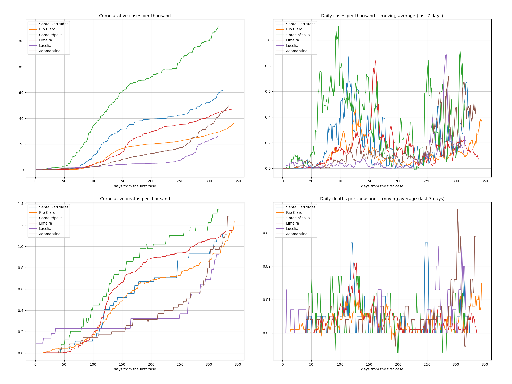

Indicadores relativos aos dados da pandemia Covid19 no estado de São Paulo até a data de 17/01/2021.
Estas informações são para uso próprio e não devem ser utilizadas para direcionamentos médicos e/ou políticas públicas.
| 10/01/2021 | 17/01/2021 | variação | |
|---|---|---|---|
| casos | 1545911 | 1605604 | 59693 (3%) |
| mortes | 48351 | 49600 | 1249 (2%) |
| cidades contaminadas | 645 (100%) | 645 (100%) | 0 (0%) |
Média móvel dos últimos 7 dias.
Mova o mouse pelo mapa para detalhes de cada região.
Média móvel dos últimos 7 dias.
Mova o mouse pelo mapa para detalhes de cada região.
Mais: Santa Gertrudes, Rio Claro, Cordeirópolis, Limeira, Lucélia, Adamantina
O ranking é feito a partir da quantidade total de mortes por cada mil habitantes de cada cidade do estado.
| city | date | day | population | case_day | cases | death_day | deaths | cases_thousand | deaths_thousand | perc_death | |
|---|---|---|---|---|---|---|---|---|---|---|---|
| 1 | Parisi | 2021-01-15 | 238 | 2161 | 2 | 136 | 0 | 7 | 62,934 | 3,239 | 5,15 |
| 2 | Cosmorama | 2021-01-15 | 238 | 7307 | 0 | 359 | 0 | 22 | 49,131 | 3,011 | 6,13 |
| 3 | Bálsamo | 2021-01-15 | 217 | 9068 | 12 | 689 | 0 | 27 | 75,981 | 2,978 | 3,92 |
| 4 | Santa Clara d'Oeste | 2021-01-15 | 223 | 2115 | 0 | 83 | 0 | 6 | 39,243 | 2,837 | 7,23 |
| 5 | Uru | 2021-01-15 | 230 | 1165 | 0 | 63 | 0 | 3 | 54,077 | 2,575 | 4,76 |
| 119 | Cordeirópolis | 2021-01-15 | 242 | 24528 | 45 | 2114 | 0 | 27 | 86,187 | 1,101 | 1,28 |
| 150 | Limeira | 2021-01-15 | 265 | 306114 | 35 | 11472 | 2 | 308 | 37,476 | 1,006 | 2,68 |
| 198 | Santa Gertrudes | 2021-01-15 | 250 | 26898 | 0 | 1166 | 0 | 24 | 43,349 | 0,892 | 2,06 |
| 229 | Rio Claro | 2021-01-15 | 270 | 206424 | 24 | 5178 | 0 | 169 | 25,084 | 0,819 | 3,26 |
| 353 | Adamantina | 2021-01-15 | 260 | 35068 | 25 | 845 | 0 | 20 | 24,096 | 0,570 | 2,37 |
| 493 | Lucélia | 2021-01-15 | 243 | 21747 | 8 | 175 | 0 | 8 | 8,047 | 0,368 | 4,57 |
Mais: Santa Gertrudes, Rio Claro, Cordeirópolis, Limeira, Lucélia, Adamantina
O ranking é feito a partir da quantidade total de casos por cada mil habitantes de cada cidade do estado.
| city | date | day | population | case_day | cases | death_day | deaths | cases_thousand | deaths_thousand | perc_death | |
|---|---|---|---|---|---|---|---|---|---|---|---|
| 1 | Guareí | 2021-01-15 | 229 | 18520 | 4 | 2027 | 0 | 7 | 109,449 | 0,378 | 0,35 |
| 2 | São José do Rio Preto | 2021-01-15 | 273 | 460671 | 407 | 39829 | 5 | 973 | 86,459 | 2,112 | 2,44 |
| 3 | Cordeirópolis | 2021-01-15 | 242 | 24528 | 45 | 2114 | 0 | 27 | 86,187 | 1,101 | 1,28 |
| 4 | Ilhabela | 2021-01-15 | 257 | 34970 | 4 | 2895 | 0 | 18 | 82,785 | 0,515 | 0,62 |
| 5 | Cajati | 2021-01-15 | 243 | 28549 | 5 | 2269 | 0 | 48 | 79,477 | 1,681 | 2,12 |
| 6 | Santos | 2021-01-15 | 267 | 433311 | 197 | 34272 | 10 | 976 | 79,093 | 2,252 | 2,85 |
| 3 | Cordeirópolis | 2021-01-15 | 242 | 24528 | 45 | 2114 | 0 | 27 | 86,187 | 1,101 | 1,28 |
| 63 | Santa Gertrudes | 2021-01-15 | 250 | 26898 | 0 | 1166 | 0 | 24 | 43,349 | 0,892 | 2,06 |
| 94 | Limeira | 2021-01-15 | 265 | 306114 | 35 | 11472 | 2 | 308 | 37,476 | 1,006 | 2,68 |
| 244 | Rio Claro | 2021-01-15 | 270 | 206424 | 24 | 5178 | 0 | 169 | 25,084 | 0,819 | 3,26 |
| 254 | Adamantina | 2021-01-15 | 260 | 35068 | 25 | 845 | 0 | 20 | 24,096 | 0,570 | 2,37 |
| 374 | Lucélia | 2021-01-15 | 243 | 21747 | 8 | 175 | 0 | 8 | 8,047 | 0,368 | 4,57 |
Os dados da cidade de São Paulo destoa das demais cidades o que prejudica a comparação em um mesmo gráfico, por isso os apresento separadamente.

Cidades mais transmissíveis com mais de 10.000 habitantes.

